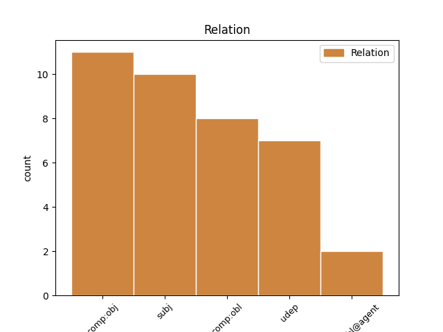
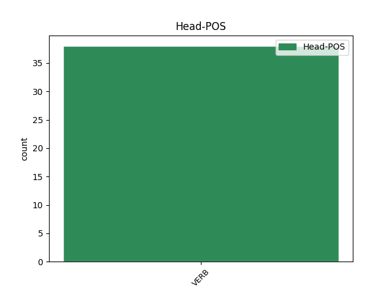
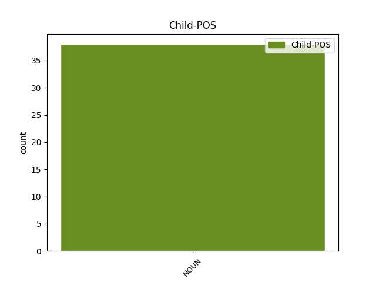

Distribution of features within this leaf



Agreement Rules sorted by frequency.
- When the dependent token is the subject(subj) of the head token, and the head token is VERB and the dependent token is NOUN.
1 Beje _ _ _ _ 0 _ _ _
2 , _ _ _ _ 0 _ _ _
3 ateityje _ _ _ _ 0 _ _ _
4 ( _ _ _ _ 0 _ _ _
5 tiesa _ _ _ _ 0 _ _ _
6 , _ _ _ _ 0 _ _ _
7 gana _ _ _ _ 0 _ _ _
8 tolimoje _ _ _ _ 0 _ _ _
9 ) _ _ _ _ 0 _ _ _
10 nepriklausomas _ _ _ _ 0 _ _ _
11 valstybes _ _ _ _ 0 _ _ _
12 iš _ _ _ _ 0 _ _ _
13 viso _ _ _ _ 0 _ _ _
14 galbūt _ _ _ _ 0 _ _ _
15 pavaduos _ _ _ _ 0 _ _ _
16 globalinė _ _ _ _ 0 _ _ _
17 sąjungą _ _ _ _ 0 _ _ _
18 , _ _ _ _ 0 _ _ _
19 kurios _ _ _ _ 0 _ _ _
20 bruožai bruožas NOUN NN Case=Nom|Gender=Masc|Number=Plur 21 subj _ En=features
21 pastebimi pastebėti VERB VBNL Case=Nom|Definite=Ind|Gender=Masc|Number=Plur|Polarity=Pos|Reflex=No|Tense=Pres|VerbForm=Part|Voice=Pass 0 _ _ _
22 ir _ _ _ _ 0 _ _ _
23 dabar _ _ _ _ 0 _ _ _
24 : _ _ _ _ 0 _ _ _
25 tai _ _ _ _ 0 _ _ _
26 anaiptol _ _ _ _ 0 _ _ _
27 nereiškia _ _ _ _ 0 _ _ _
28 , _ _ _ _ 0 _ _ _
29 kad _ _ _ _ 0 _ _ _
30 išnyks _ _ _ _ 0 _ _ _
31 tautiniai _ _ _ _ 0 _ _ _
32 skirtingumai _ _ _ _ 0 _ _ _
33 , _ _ _ _ 0 _ _ _
34 kalbos _ _ _ _ 0 _ _ _
35 ir _ _ _ _ 0 _ _ _
36 tradicijos _ _ _ _ 0 _ _ _
37 . _ _ _ _ 0 _ _ _
1 Nesinori _ _ _ _ 0 _ _ _
2 sakyti _ _ _ _ 0 _ _ _
3 , _ _ _ _ 0 _ _ _
4 bet _ _ _ _ 0 _ _ _
5 turbūt _ _ _ _ 0 _ _ _
6 netenka _ _ _ _ 0 _ _ _
7 abejoti _ _ _ _ 0 _ _ _
8 , _ _ _ _ 0 _ _ _
9 kad _ _ _ _ 0 _ _ _
10 daugelis _ _ _ _ 0 _ _ _
11 mūsų _ _ _ _ 0 _ _ _
12 intelektualų _ _ _ _ 0 _ _ _
13 , _ _ _ _ 0 _ _ _
14 dabar _ _ _ _ 0 _ _ _
15 pasukusių pasukti VERB VBNL Case=Gen|Definite=Ind|Gender=Masc|Number=Plur|Polarity=Pos|Reflex=No|Tense=Past|VerbForm=Part|Voice=Act 0 _ _ _
16 Strepsiado _ _ _ _ 0 _ _ _
17 keliu kelias NOUN NN Case=Ins|Gender=Masc|Number=Sing 15 comp:obj _ En=path|SpaceAfter=No
18 , _ _ _ _ 0 _ _ _
19 niekada _ _ _ _ 0 _ _ _
20 nebuvo _ _ _ _ 0 _ _ _
21 tikri _ _ _ _ 0 _ _ _
22 intelektualai _ _ _ _ 0 _ _ _
23 – _ _ _ _ 0 _ _ _
24 buvo _ _ _ _ 0 _ _ _
25 veikiau _ _ _ _ 0 _ _ _
26 karjeristai _ _ _ _ 0 _ _ _
27 , _ _ _ _ 0 _ _ _
28 kuriems _ _ _ _ 0 _ _ _
29 nepavyko _ _ _ _ 0 _ _ _
30 užimti _ _ _ _ 0 _ _ _
31 visuomenėje _ _ _ _ 0 _ _ _
32 vietos _ _ _ _ 0 _ _ _
33 , _ _ _ _ 0 _ _ _
34 atitinkančios _ _ _ _ 0 _ _ _
35 jų _ _ _ _ 0 _ _ _
36 troškimus _ _ _ _ 0 _ _ _
37 , _ _ _ _ 0 _ _ _
38 ir _ _ _ _ 0 _ _ _
39 kurių _ _ _ _ 0 _ _ _
40 frustracija _ _ _ _ 0 _ _ _
41 puikiai _ _ _ _ 0 _ _ _
42 atliepia _ _ _ _ 0 _ _ _
43 platesnių _ _ _ _ 0 _ _ _
44 sluoksnių _ _ _ _ 0 _ _ _
45 frustraciją _ _ _ _ 0 _ _ _
46 . _ _ _ _ 0 _ _ _
1 Esu _ _ _ _ 0 _ _ _
2 ne _ _ _ _ 0 _ _ _
3 kartą kartas NOUN NN Case=Acc|Gender=Masc|Number=Sing 4 udep _ En=time
4 kalbėjęs kalbėti VERB VBNH Case=Nom|Definite=Ind|Gender=Masc|Number=Sing|Polarity=Pos|Reflex=No|Tense=PastSimp|VerbForm=Part|Voice=Act 0 _ _ _
5 apie _ _ _ _ 0 _ _ _
6 pavojingą _ _ _ _ 0 _ _ _
7 „ _ _ _ _ 0 _ _ _
8 lietuviškąją _ _ _ _ 0 _ _ _
9 triadą _ _ _ _ 0 _ _ _
10 “ _ _ _ _ 0 _ _ _
11 ( _ _ _ _ 0 _ _ _
12 sakyčiau _ _ _ _ 0 _ _ _
13 , _ _ _ _ 0 _ _ _
14 lietuviškąjį _ _ _ _ 0 _ _ _
15 Bermudų _ _ _ _ 0 _ _ _
16 trikampį _ _ _ _ 0 _ _ _
17 ) _ _ _ _ 0 _ _ _
18 – _ _ _ _ 0 _ _ _
19 nesutarimus _ _ _ _ 0 _ _ _
20 su _ _ _ _ 0 _ _ _
21 rusais _ _ _ _ 0 _ _ _
22 , _ _ _ _ 0 _ _ _
23 lenkais _ _ _ _ 0 _ _ _
24 ir _ _ _ _ 0 _ _ _
25 žydais _ _ _ _ 0 _ _ _
26 , _ _ _ _ 0 _ _ _
27 arba _ _ _ _ 0 _ _ _
28 su _ _ _ _ 0 _ _ _
29 Rusija _ _ _ _ 0 _ _ _
30 , _ _ _ _ 0 _ _ _
31 Lenkija _ _ _ _ 0 _ _ _
32 ir _ _ _ _ 0 _ _ _
33 Izraeliu _ _ _ _ 0 _ _ _
34 . _ _ _ _ 0 _ _ _
1 Jei _ _ _ _ 0 _ _ _
2 būtų _ _ _ _ 0 _ _ _
3 laimėjęs _ _ _ _ 0 _ _ _
4 Strepsiadas _ _ _ _ 0 _ _ _
5 , _ _ _ _ 0 _ _ _
6 tiksliau _ _ _ _ 0 _ _ _
7 , _ _ _ _ 0 _ _ _
8 Strepsiado _ _ _ _ 0 _ _ _
9 idėja _ _ _ _ 0 _ _ _
10 – _ _ _ _ 0 _ _ _
11 ligi _ _ _ _ 0 _ _ _
12 šiol _ _ _ _ 0 _ _ _
13 gyventume _ _ _ _ 0 _ _ _
14 dorų _ _ _ _ 0 _ _ _
15 , _ _ _ _ 0 _ _ _
16 darbščių _ _ _ _ 0 _ _ _
17 , _ _ _ _ 0 _ _ _
18 patriarchališkų _ _ _ _ 0 _ _ _
19 , _ _ _ _ 0 _ _ _
20 tėvynę _ _ _ _ 0 _ _ _
21 mylinčių _ _ _ _ 0 _ _ _
22 žemdirbių _ _ _ _ 0 _ _ _
23 bendruomenėse _ _ _ _ 0 _ _ _
24 , _ _ _ _ 0 _ _ _
25 nieko _ _ _ _ 0 _ _ _
26 nežinančiose _ _ _ _ 0 _ _ _
27 ir _ _ _ _ 0 _ _ _
28 nenorinčiose _ _ _ _ 0 _ _ _
29 žinoti _ _ _ _ 0 _ _ _
30 apie _ _ _ _ 0 _ _ _
31 tolimesnius _ _ _ _ 0 _ _ _
32 kraštus _ _ _ _ 0 _ _ _
33 ir _ _ _ _ 0 _ _ _
34 visatą _ _ _ _ 0 _ _ _
35 – _ _ _ _ 0 _ _ _
36 beje _ _ _ _ 0 _ _ _
37 , _ _ _ _ 0 _ _ _
38 apsuptose apsupti VERB VBNL Case=Loc|Definite=Ind|Gender=Fem|Number=Plur|Polarity=Pos|Reflex=No|Tense=Past|VerbForm=Part|Voice=Act 0 _ _ _
39 nekenčiamų _ _ _ _ 0 _ _ _
40 ir _ _ _ _ 0 _ _ _
41 iš _ _ _ _ 0 _ _ _
42 tikro _ _ _ _ 0 _ _ _
43 pavojingų _ _ _ _ 0 _ _ _
44 barbarų _ _ _ _ 0 _ _ _
45 genčių gentis NOUN NN Case=Gen|Gender=Fem|Number=Plur 38 comp:obl@agent _ En=tribe|SpaceAfter=No
46 . _ _ _ _ 0 _ _ _
1 Iš _ _ _ _ 0 _ _ _
2 viso _ _ _ _ 0 _ _ _
3 kurti _ _ _ _ 0 _ _ _
4 fetišą _ _ _ _ 0 _ _ _
5 , _ _ _ _ 0 _ _ _
6 stabą _ _ _ _ 0 _ _ _
7 iš _ _ _ _ 0 _ _ _
8 valstybės _ _ _ _ 0 _ _ _
9 – _ _ _ _ 0 _ _ _
10 nepriimtina _ _ _ _ 0 _ _ _
11 praktika _ _ _ _ 0 _ _ _
12 , _ _ _ _ 0 _ _ _
13 nes _ _ _ _ 0 _ _ _
14 ji _ _ _ _ 0 _ _ _
15 pažeidžia _ _ _ _ 0 _ _ _
16 pirmąjį _ _ _ _ 0 _ _ _
17 Dievo _ _ _ _ 0 _ _ _
18 įsakymą _ _ _ _ 0 _ _ _
19 , _ _ _ _ 0 _ _ _
20 privalomą privalėti VERB VBNL Case=Acc|Definite=Ind|Gender=Masc|Number=Sing|Polarity=Pos|Reflex=No|Tense=Pres|VerbForm=Part|Voice=Pass 0 _ _ _
21 ir _ _ _ _ 0 _ _ _
22 krikščioniui krikščionis NOUN NN Case=Dat|Gender=Masc|Number=Sing 20 comp:obl _ En=Christian|SpaceAfter=No
23 , _ _ _ _ 0 _ _ _
24 ir _ _ _ _ 0 _ _ _
25 šiaip _ _ _ _ 0 _ _ _
26 jau _ _ _ _ 0 _ _ _
27 mąstančiam _ _ _ _ 0 _ _ _
28 žmogui _ _ _ _ 0 _ _ _
29 . _ _ _ _ 0 _ _ _
Disagree Examples:
1 Tolerancijos _ _ _ _ 0 _ _ _
2 žmogumi žmogus NOUN NN Case=Ins|Gender=Masc|Number=Sing 3 comp:obl _ En=person
3 paskelbta paskelbti VERB VBNL Case=Nom|Definite=Ind|Gender=Fem|Number=Sing|Polarity=Pos|Reflex=No|Tense=Past|VerbForm=Part|Voice=Pass 0 _ _ _
4 rašytoja _ _ _ _ 0 _ _ _
5 V. _ _ _ _ 0 _ _ _
6 Juknaitė _ _ _ _ 0 _ _ _
1 Rašytoja _ _ _ _ 0 _ _ _
2 Vanda _ _ _ _ 0 _ _ _
3 Juknaitė _ _ _ _ 0 _ _ _
4 šeštadienį šeštadienis NOUN NN Case=Acc|Gender=Masc|Number=Sing 9 udep _ En=Saturday
5 Vytauto _ _ _ _ 0 _ _ _
6 Didžiojo _ _ _ _ 0 _ _ _
7 universitete _ _ _ _ 0 _ _ _
8 Kaune _ _ _ _ 0 _ _ _
9 paskelbta paskelbti VERB VBNL Case=Nom|Definite=Ind|Gender=Fem|Number=Sing|Polarity=Pos|Reflex=No|Tense=Past|VerbForm=Part|Voice=Pass 0 _ _ _
10 2016-ųjų _ _ _ _ 0 _ _ _
11 Tolerancijos _ _ _ _ 0 _ _ _
12 žmogumi _ _ _ _ 0 _ _ _
13 . _ _ _ _ 0 _ _ _
1 Rašytoja _ _ _ _ 0 _ _ _
2 Vanda _ _ _ _ 0 _ _ _
3 Juknaitė _ _ _ _ 0 _ _ _
4 šeštadienį _ _ _ _ 0 _ _ _
5 Vytauto _ _ _ _ 0 _ _ _
6 Didžiojo _ _ _ _ 0 _ _ _
7 universitete universitetas NOUN NN Case=Loc|Gender=Masc|Number=Sing 9 udep _ En=university
8 Kaune _ _ _ _ 0 _ _ _
9 paskelbta paskelbti VERB VBNL Case=Nom|Definite=Ind|Gender=Fem|Number=Sing|Polarity=Pos|Reflex=No|Tense=Past|VerbForm=Part|Voice=Pass 0 _ _ _
10 2016-ųjų _ _ _ _ 0 _ _ _
11 Tolerancijos _ _ _ _ 0 _ _ _
12 žmogumi _ _ _ _ 0 _ _ _
13 . _ _ _ _ 0 _ _ _
1 Rašytoja _ _ _ _ 0 _ _ _
2 Vanda _ _ _ _ 0 _ _ _
3 Juknaitė _ _ _ _ 0 _ _ _
4 šeštadienį _ _ _ _ 0 _ _ _
5 Vytauto _ _ _ _ 0 _ _ _
6 Didžiojo _ _ _ _ 0 _ _ _
7 universitete _ _ _ _ 0 _ _ _
8 Kaune _ _ _ _ 0 _ _ _
9 paskelbta paskelbti VERB VBNL Case=Nom|Definite=Ind|Gender=Fem|Number=Sing|Polarity=Pos|Reflex=No|Tense=Past|VerbForm=Part|Voice=Pass 0 _ _ _
10 2016-ųjų _ _ _ _ 0 _ _ _
11 Tolerancijos _ _ _ _ 0 _ _ _
12 žmogumi žmogus NOUN NN Case=Ins|Gender=Masc|Number=Sing 9 comp:obl _ En=person|SpaceAfter=No
13 . _ _ _ _ 0 _ _ _
1 Ši _ _ _ _ 0 _ _ _
2 kasmetinė _ _ _ _ 0 _ _ _
3 nominacija nominacija NOUN NN Case=Nom|Gender=Fem|Number=Sing 4 subj _ En=nomination
4 skiriama skirti VERB VBNH Definite=Ind|Gender=Neut|Polarity=Pos|Reflex=No|Tense=Pres|VerbForm=Part|Voice=Pass 0 _ _ _
5 asmeniui _ _ _ _ 0 _ _ _
6 , _ _ _ _ 0 _ _ _
7 stojusiam _ _ _ _ 0 _ _ _
8 prieš _ _ _ _ 0 _ _ _
9 ksenofobijos _ _ _ _ 0 _ _ _
10 bei _ _ _ _ 0 _ _ _
11 antisemitizmo _ _ _ _ 0 _ _ _
12 , _ _ _ _ 0 _ _ _
13 kitaminčių _ _ _ _ 0 _ _ _
14 , _ _ _ _ 0 _ _ _
15 kitatikių _ _ _ _ 0 _ _ _
16 bei _ _ _ _ 0 _ _ _
17 kitataučių _ _ _ _ 0 _ _ _
18 persekiojimą _ _ _ _ 0 _ _ _
19 , _ _ _ _ 0 _ _ _
20 pasisakiusiam _ _ _ _ 0 _ _ _
21 prieš _ _ _ _ 0 _ _ _
22 smurto _ _ _ _ 0 _ _ _
23 , _ _ _ _ 0 _ _ _
24 prievartos _ _ _ _ 0 _ _ _
25 ir _ _ _ _ 0 _ _ _
26 radikalizmo _ _ _ _ 0 _ _ _
27 apraiškas _ _ _ _ 0 _ _ _
28 visuomeniniame _ _ _ _ 0 _ _ _
29 Lietuvos _ _ _ _ 0 _ _ _
30 gyvenime _ _ _ _ 0 _ _ _
31 . _ _ _ _ 0 _ _ _